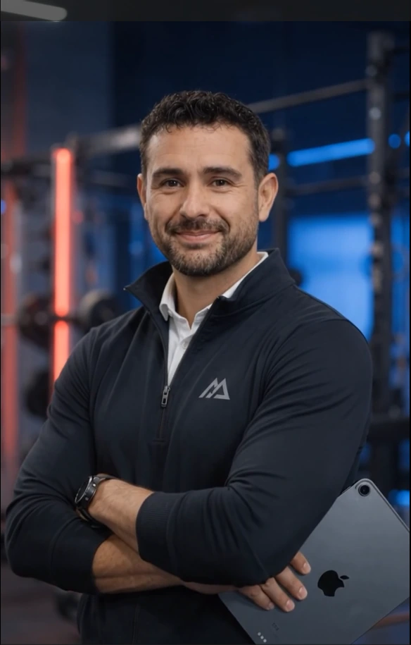

Ramón Alberto
Curbalán Vega
Gestión de restaurantes
y banquetes
Más de veinte años
de experiencia en el sector

01Perfil profesional
Más de veinte años en hostelería
Mi trayectoria se centra en la gestión y administración de restaurantes y banquetes, con experiencia en liderazgo de equipos y organización de eventos.
Me defino como una persona resolutiva, analítica y empática, con vocación por la formación continua en gestión y dirección.
Experiencia en el sector hotelero
Hoteles Allsun
Barefoot Hotel
Capvermell Gran Hotel
He ocupado puestos de liderazgo y gestionado simultáneamente varios puntos de venta.
Mi experiencia incluye la organización y ejecución de eventos de gran envergadura.
Gestión operativa y liderazgo
Formación e idiomas
Formación certificada
Gestión de procesos de servicio en restauración
Análisis de la rentabilidad en establecimientos hoteleros
Coctelería
Inglés e italiano
Conocimiento avanzado para atender a una clientela diversa y responder a sus necesidades.
Mi aportación profesional
Gestión de restaurantes y banquetes
Aporto experiencia operativa, capacidad de organización y liderazgo de equipos para contribuir al éxito de cada proyecto.
Estoy abierto a explorar oportunidades de colaboración y analizar cómo puedo aportar valor al equipo.